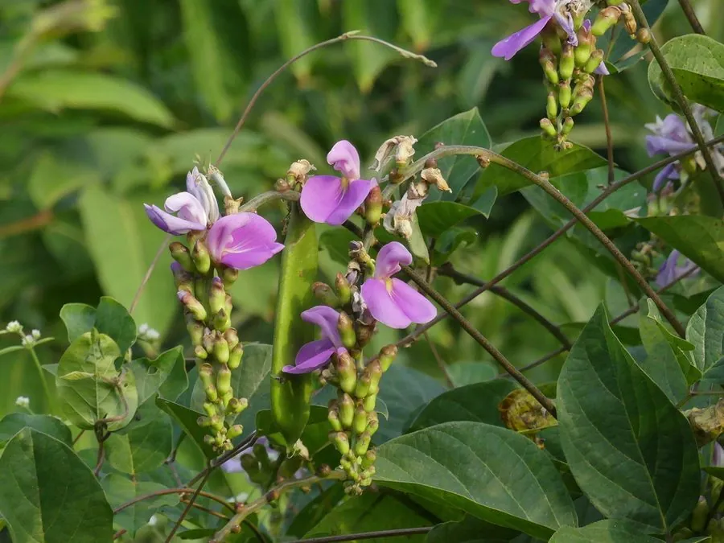

农作物与经济植物 · 植物界
刀豆 Canavalia gladiata

刀豆的荚果长大如刀，种子可煮食或入药，嫩荚必须煮熟去毒后才能食用，是热带、亚热带常见的豆类作物。
- 分类
- 门被子植物门纲双子叶植物纲目豆目科豆科属刀豆属
- 栖息环境
- 温暖湿润的菜地与庭院，不耐寒，喜光照充足
- 地理分布
- 原产热带亚洲与非洲，现中国南方、印度、东南亚等地栽培
- 保护级别
- 暂无评估（栽培作物）
物种志
刀豆是一年生或多年生缠绕草本，茎蔓生、粗壮，可攀援 5 m 以上。三出复叶，小叶卵形。花蝶形，白色或淡紫色，总状花序。荚果长大、扁平，长 20–35 cm，形似大刀；种子大而扁，卵形，红色或褐色，种脐长。根系有根瘤。
刀豆原产热带亚洲与非洲，中国南方有栽培。它喜温暖湿润、光照充足，不耐寒，适宜在疏松肥沃、排水良好的土壤中种植，多搭架栽培。嫩荚可炒食、腌制，种子可煮食、炖汤；但刀豆含有凝集素和皂苷等有毒成分，嫩荚和种子必须彻底煮熟后才能食用，生食或半生会中毒。刀豆的种子在中药里也称“刀豆”，有温中下气、益肾补元之效。刀豆植株高大、荚果醒目，也可作庭院观赏。
形态与习性
- 荚果长 20–35 cm，扁平如刀
- 种子大而扁，红色或褐色
- 用途嫩荚炒食、种子煮食
- 毒性必须彻底煮熟，生食会中毒
- 药用种子温中下气、益肾补元
趣味知识
- 刀豆的荚果又长又扁，像一把大刀，名字由此而来。
- 刀豆含凝集素和皂苷，必须彻底煮熟才能吃，生食会中毒。
- 刀豆的种子在中药里也能入药，有温中下气之效。